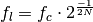
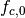
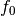

Octave¶
Module for working with octaves.
The following is an example on how to use acoustics.octave.Octave.
"""
An example of how to use :class:`Acoustics.Octave.Octave`.
"""
from acoustics.octave import Octave
import numpy as np
def main():
"""We happen to have the following frequency vector."""
f = np.logspace(2, 4, 100)
"""And we want to get some 1/3-octave results, so we set octave to 3."""
o = Octave(interval=f, order=3)
"""We can now print the center frequencies of the 1/3 octave bands belonging to this frequency vector."""
print(o.center)
"""
Since by default ``unique=True`` in :class:`Auraliser.Octave.Octave` we get a
value for every value in ``interval``. If we only want to obtain unique
values, it is fastest to set ``unique=True`. This could be done during
initialization but also now.
"""
o.unique = True
"""Now we should only get the unique center frequencies."""
print(o.center)
"""We can also calculate the bandwidth of each band."""
print(o.bandwidth)
"""As well as the lower limits of the frequency limits..."""
print(o.lower)
"""...and the upper frequency limits."""
print(o.upper)
"""
So far we used a frequency interval. Sometimes you have a lower frequency and an upper frequency.
Instead of requiring to generate a frequency vector you can just give these boundary values as well.
"""
o = Octave(fmin=100.0, fmax=20000, order=6)
print(o.center())
if __name__ == '__main__':
main()
- class acoustics.octave.Octave(order=1, interval=None, fmin=None, fmax=None, unique=False, reference=1000.0)[source]¶
Bases: object
Class to calculate octave center frequencies.
- lower[source]¶
Lower frequency limits of bands.

See also lower_frequency().
- order = None¶
Fraction of octave.
- reference = None¶
Reference center frequency .
- unique = None¶
Whether or not to calculate the requested values for every value of interval.
- upper[source]¶
Upper frequency limits of bands.

See also upper_frequency().

- acoustics.octave.REFERENCE = 1000.0¶
Reference frequency.
- acoustics.octave.band_of_frequency(f, order=1, ref=1000.0)[source]¶
Calculate the band n from a given center frequency.
Parameters: - f – Frequency
 .
. - order – Band order.
- ref – Reference center frequency .
- f – Frequency
- acoustics.octave.frequency_of_band(n, order=1, ref=1000.0)[source]¶
Calculate center frequency of band n.
Parameters: - n – band ``n`.
- order – Order of octave.
- ref – Reference center frequency.